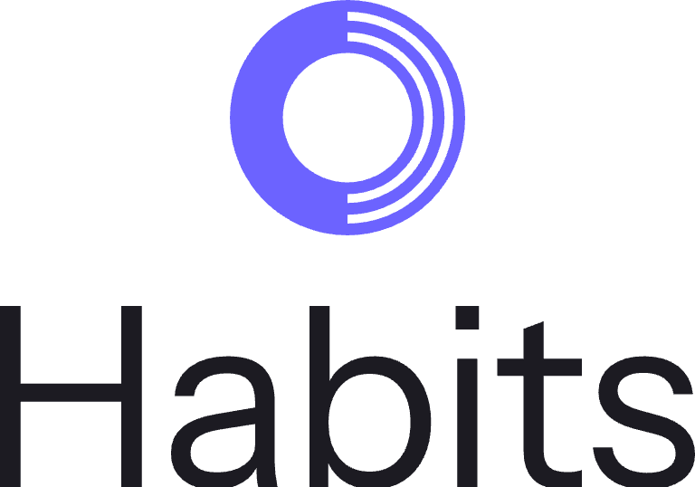

Habits
Logo guidelines
v1.0 · SEPT 2026
MARK B3 · MONOGRAM A3
Habits has two permanent forms and four lockups built from them. This document records the construction, the colors, and the sizes at which each one stops working. Every file named here is in the project's logo/ folder.
The mark
One ring of two natures: a solid band for the body, three light bands for the mind. Carries the app icon, the favicon, the splash, and every lockup.
The monogram
An H whose stems break into three plates each — the mark's segmented construction, carried into a letter. For avatars, loading states and share cards.
The wordmark is Instrument Sans Regular, tracked −0.016em. It is never set in another face, another weight, or another case.
Horizontal
The default. App header, site nav, email signature, anywhere a single line is available.

Stacked
For square and narrow spaces: onboarding, splash, print, merchandise.
Monogram + type
The alternate signature. Use where the mark already appears nearby and repeating it would read as an echo.
Wordmark alone
Where the mark is already present as an icon — App Store copy, a favicon'd browser tab, a device home screen.
CLEAR SPACE = ¼ M
Let M be the mark's ink width — the visible ring, not the file's canvas. Every measurement below is a multiple of M, so the lockups scale without redrawing.
| Mark ink height | 1.30 × cap height |
| Gap, mark to wordmark | 0.50 M |
| Gap, stacked | 0.30 M |
| Vertical alignment | cap band centred on M |
| Clear space, all sides | 0.25 M |
| Mark within app icon | 90% of canvas |
The full mark holds down to 48 px. Below that its three light bands land on less than a pixel each and merge — swap to the reduced cut, which carries two bands. Same threshold for the monogram. In print, 12 mm.
Indigo
#6C63FF
Icon ground
#13131E
Type on dark
#E4E4F4
Type on light
#1C1B22
Grayscale
#4D4D4D
Indigo is the mark's color on any ground light or dark enough to hold it. On indigo itself, on photography, or in one-color print, use white, solid black, or the knockout tile. Grayscale is the mono cut at 70% black — for faxed, stamped, and single-plate work only.
Don't rotate, skew, or mirror the mark. Its heavy band always sits on the left.
Don't outline it, add a stroke to it, or apply a shadow, glow, or gradient beyond the supplied glow icon.
Don't recolor it into the semantic palette. Coral and green mean something specific in the app.
Don't place it on a photograph or a busy field without the knockout tile behind it.
Don't rebuild the lockup by hand, respace it, or set the wordmark in another face.
Don't pre-round the app icon. iOS and the App Store apply the mask; a rounded source gets double-rounded.
| File | Use |
|---|---|
| habits-mark.svg | Full mark, currentColor — inline in markup |
| habits-mark-small.svg | Reduced cut, below 48 px |
| habits-monogram*.svg | Monogram, full and reduced |
| habits-lockup-{form}-{color}.svg | horizontal · stacked · monogram, in six colors |
| habits-wordmark-{color}.svg | Type alone |
| *-knockout.svg | White ink on an indigo tile |
| png/icon-{n}.png | Icon ladder: 1024 512 192 180 167 152 144 120 80 76 60 40 |
| png/icon-maskable-{n}.png | Android/PWA maskable — mark at 56% for the circular crop |
| png/lockup-*.png | Flattened lockups, type baked in — for anywhere the font can't load |
| site/ | Web manifest and the <head> snippet |
The lockup SVGs carry live text. They render correctly wherever Instrument Sans is loadable — a browser with the webfont, a machine with the font installed. For a printer, a third party, or a vector editor without it, send the PNG cut or outline the type first.